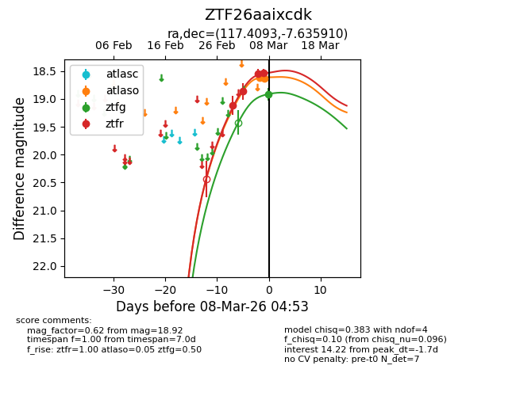
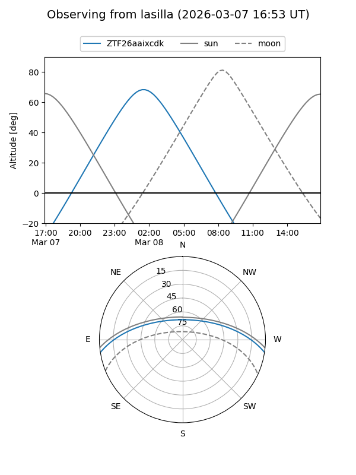
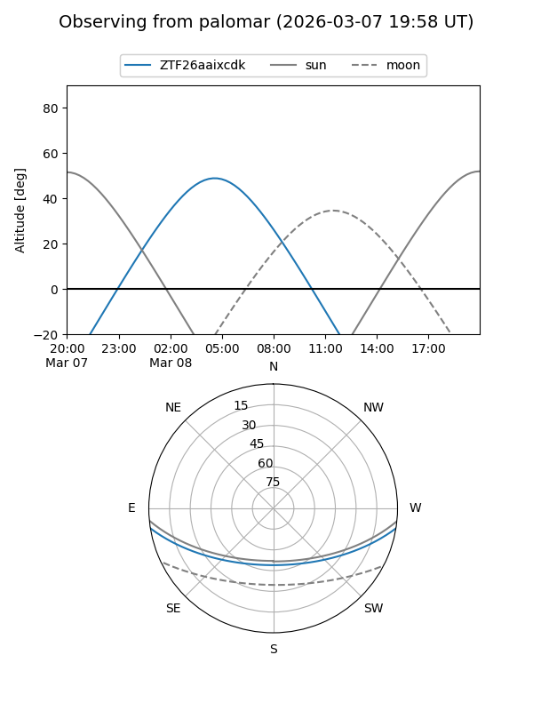
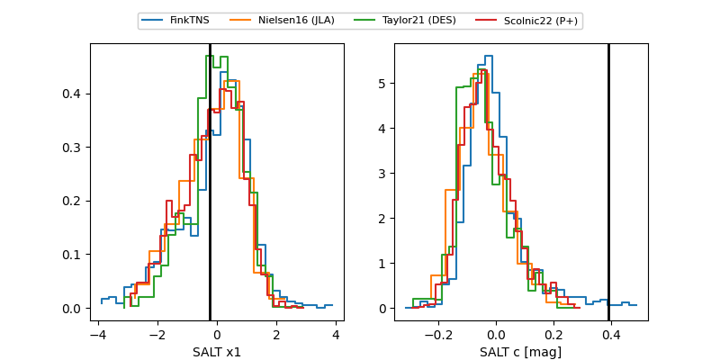

ZTF26aaixcdk
Target ZTF26aaixcdk at 2026-03-08 04:54
Aliases and brokers:
FINK: link
Lasair: link
ALeRCE: link
alt names
ZTF26aaixcdk (ztf,fink_ztf)
Coordinates:
equatorial (ra, dec) = 117.4093,-7.63591
equatorial (HMS+DMS) = 07:49:38.23,-07:38:09.27
galactic (l, b) = (226.5154,+9.26563)
Flags:
Photometry:
last atlaso=18.63, ztfg=18.92, ztfr=18.54
2 atlaso, 1 ztfg, 4 ztfr detections
Lightcurve

Visibility


Additional plots
